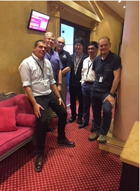

The INSARAG Medical Working Group (MWG) in keeping with UN General Assembly Resolution 57/150 on "Strengthening the Effectiveness and Coordination of International Urban Search and Rescue Assistance" aims to the enhance the INSARAG Guidelines that will enable the medical component of a USAR team and develop relevant medical guidance notes. MWG was established in 2008 with the endorsement from the INSARAG Steering Committee in 2007. This inter-regional working group aims to focus on the medical requirements of international USAR teams being deployed outside their countries of origin. The group meets two to three times a year. The reports of this working group's meetings can be found below. The medical guidance notes prepared by this working group and endorsed by the INSARAG Steering Group can be found at the 'Methodology' tab.

Chair of MWG: Dr. Anthony Macintyre
| Name | Country | Organisation | Region | Position | |
| Anthony Macintyre | USA | USAID | Americas | Chair | macintyr@gwu.edu |
| Peng Bibo China | China | China | Asia-Pacific | Member | pengbibo0610@sina.com |
| Thomas Eckhardt | Netherlands | USAR.NL | AEME | Member | thomas.eckhardt@ggdhaaglanden.nl; tecki@worldmail.nl |
| Malcom Russell | UK | ISAR | AEME | Member | malcolm.russell@prometheusmed.com |
| Rudi Coninx | WHO | WHO | AEME | Member | coninxr@who.int |
| Magali Jeanteur | France | PUI | AEME | Member | mjeanteur@gmail.com |
| Yasushi Nakajima | Japan | Asia-Pacific | Member | nakajiji@gmail.com | |
| Hector Fuentes | Australia | AUS-1 DART | Asia-Pacific | Member | hfue333@hotmail.com |
| Dan Nemet (TBC) | Israel | ISR-1 | AEME | Member | Dan.Nemet@clalit.org.il |
| Trevor Glass | UK | AEME | Associate Technical Expert Member | trevorglass00@gmail.com> |
2020
Medical Working Group Virtual Meeting minutes held on 27 August 2020 Link
2019
MWG products during the Team Leaders Course in Chile 20109
Attachment A - Attachment B - Attachment C - Attachment E - Attachment F - Attachment G - Attachment H
2018
Attached the updated of the Medical Working Group, which was held in Romania
2017
The INSARAG Medical Working Group (MWG) met in Bali, Indonesia, on the 16-17 October 2017.
This meeting was hosted by BASARNAS of the Indonesia Government and co-organised by the INSARAG Secretariat.
Representatives from the World Health Organization (WHO) participated in the meeting as well.
2015
The INSARAG Medical Working Group (MWG) met in Abu Dhabi, United Arab Emirates (UAE), on the 15-16 October 2015.
This meeting was hosted by the Ministry of Interior of the Government of the United Arab Emirates and co-organised by the INSARAG Secretariat.
Representatives from the World Health Organization (WHO) and the International Federation of Red Cross and Red Crescent Societies (IFRC) participated in the meeting as well.
Chairman's summary of MWG Meeting 2015
2012
FIRST MEETING, 19-23 MARCH 2012, AUSTRALIA
The first meeting of the INSARAG MWG in 2012 took place from 19-23 March 2012 in Australia parallel with the INSARAG Team Leaders Meeting. Below is the Chairman Summary and outcomes of this meeting. Please note that these outcomes are not official INSARAG documents until they are endorsed by the INSARAG Steering Group.
Chairman Summary (English)
Patient Treatment Record
2011
FIRST MEETING, 30 MARCH-03 APRIL 2011, COSTA RICA
The first meeting of the INSARAG MWG in 2011 took place from 30 March–03 April 2011 in Costa Rica back to back with the INSARAG Team Leaders Meeting. Below is the Chairman Summary and outcomes of this meeting. Please note that these outcomes are not official INSARAG documents until they are endorsed by the INSARAG Steering Group.
Final Chairman Summary INSARAG MWG 2011 (English)
Annex A MWG Participants List
Annex B Final MWG Meeting Agenda
Annex C Emerg2011Poster
Annex D Cuba Meeting Proceedings
Annex E Survival Interval in Earthquake Entrapments
Annex F Optimizing Medical Response to Large Scale Disasters The Ad Hoc Collaborative Health Care System Letter to editor
SECOND MEETING, 18-22 NOVEMBER 2011, SOUTH AFRICA
The second and last meeting of the INSARAG MWG in 2011 took place from 18-22 November 2011 in South Africa back to back with the INSARAG/UNDAC Awareness Training. Please note that these outcomes are not official INSARAG documents until they are endorsed by the INSARAG Steering Group.
Chairman Summary
Outcomes of the meeting can be found below:
Medical Relief After Earthquakes: It's Time for a New Paradigm
INSARAG Patient Treatment Record
2010
FIRST MEETING, 21-25 MARCH 2010, UAE
The first meeting of the INSARAG MWG in 2010 took place from 21-25 March 2010 in UAE in parallel with the INSARAG Team Leaders Meeting. Please find attached the Chairman Summary and its annexes/outcomes of this meeting. Please note that these outcomes are not official INSARAG documents until they are endorsed by the INSARAG Steering Group.
INSARAG MWG Meeting Chairman Summary (English)
Annex A Meeting Participants
Annex B MWG Terms of Reference
Annex C Summary of Discussions Points
Annex D Draft Recovery and Deceased
Annex E Data Collection and Publication
Annex F IEC Expert Classifier CV Form
Annex G IEC Schedule
SECOND MEETING, 24-28 MAY 2010, SWITZERLAND
The second meeting of the INSARAG MWG for 2010 took place from 24-28 May 2010 in Switzerland before the INSARAG Steering Group Meeting. Please find attached the Chairman Summary and its annexes/outcomes of this meeting. Please note that these outcomes are not official INSARAG documents until they are endorsed by the INSARAG Steering Group.
INSARAG MWG Meeting Chairman Summary (English)
INSARAG Guidelines Medical Supplement 24.05.10 - Final.doc
Draft MEDICAL GUIDANCE NOTE Provision of Medical Care
Draft MEDICAL GUIDANCE NOTE Recovery of Deceased
Draft MEDICAL GUIDANCE NOTE USAR Medical Donations
Draft MEDICAL GUIDANCE NOTE Identification of USAR Medical Personnel
Draft MEDICAL GUIDANCE NOTE INSARAG Medical Handover Form
Draft MEDICAL GUIDANCE NOTE Post Mission Medical Reporting
THIRD MEETING, 13-17 SEPTEMBER 2010, JAPAN
The third and last meeting of the INSARAG MWG in 2010 took place from 13-17 September 2010 in Japan in parallel with the INSARAG Global Meeting. Please find attached the Chairman Summary.
INSARAG MWG Meeting Chairman Summary (English)
2009
FIRST MEETING, 13-16 JANUARY 2009, UAE
The first meeting of the INSARAG MWG in 2009 took place from 13-16 January 2009 in UAE. Please find attached the Chairman Summary and its annexes/outcomes of this meeting.
Chairman Summary
SECOND MEETING, 15-17 APRIL 2009, AUSTRALIA
The second meeting of the INSARAG MWG in 2009 took place from 15-17 April 2009 in Australia. Please find attached the Chairman Summary and its annexes/outcomes of this meeting.
Chairman Summary
2008
FIRST MEETING, 8-10 MAY 2008, UK
The inaugural meeting of the INSARAG MWG took place from 8-10 May 2008 in UK back-to-back with the INSARAG Team Leaders Meeting. Please find attached the Chairman Summary this meeting.
Chairman Summary